A1 and A2 drawings are approved via Claude relay audit1 #3. The user approved the jumpSquat v08 drawing and directed a script-only knee-speck cleanup as v09; stagger v09 is approved as drawn. The current 48-color atlas is packed. Astra's anatomy/scale audit passes; Claude's runtime contact and integration checks remain separate.
Every sprite tile below is one 256×256 cell at native packed pixel density. Current A1/A2 cells come from the exact 48-color atlas. Prior cells come from the committed pre-candidate atlas. Approved title-style neutral/combat cells and Sasuke idle f0 provide the body and scale references.
A1 — jumpSquat v09 (script cleanup of approved v08 drawing)
One 70 ms non-looping spot-dodge crouch. The user approved v08's drawing, then asked for dark-red knee specks to be removed with a script. v09 changes 54 pixels in narrow knee-edge masks; v08 remains byte-for-byte preserved and all other v09 source pixels match it.
Approved idle f0Approved title-style neutral
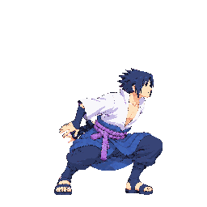
Approved jumpSquat v07
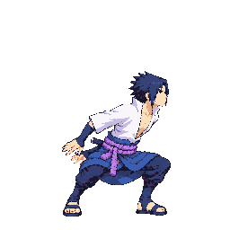
User-approved drawing · v08 source
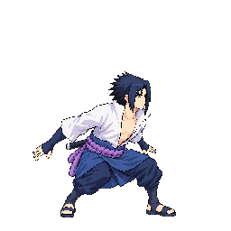
User-directed pixel cleanup · v09
Check
Result
Packed scale
Manual low-confidence pose pass. Head probe H 1.059 (within ±6%); measured head width 43 px, same as idle f0. Forward head pitch shortens its crown-to-chin projection.
Body proxy
B 0.925 (7.5% below idle, within the proxy's ±10% advisory). The crouch folds and overlaps the cloth and far-side limbs.
Visible build
Shoulder and torso width, visible arm/leg thickness, sandal geometry and clothing volume were compared against idle and neutral at the same density. Rear arm and far leg are foreshortened or partly hidden, so their apparent lengths are not used.
Final anatomy audit
GPT-6 Astra: PASS, moderate confidence. No visible scale/build defect, clipping or detached remnant; far arm/leg and hip landmarks remain partly occluded (about ±3 px landmark uncertainty). Runtime contact/hurtbox checks remain with Claude.
View the preserved v08 source and cleaned v09 source
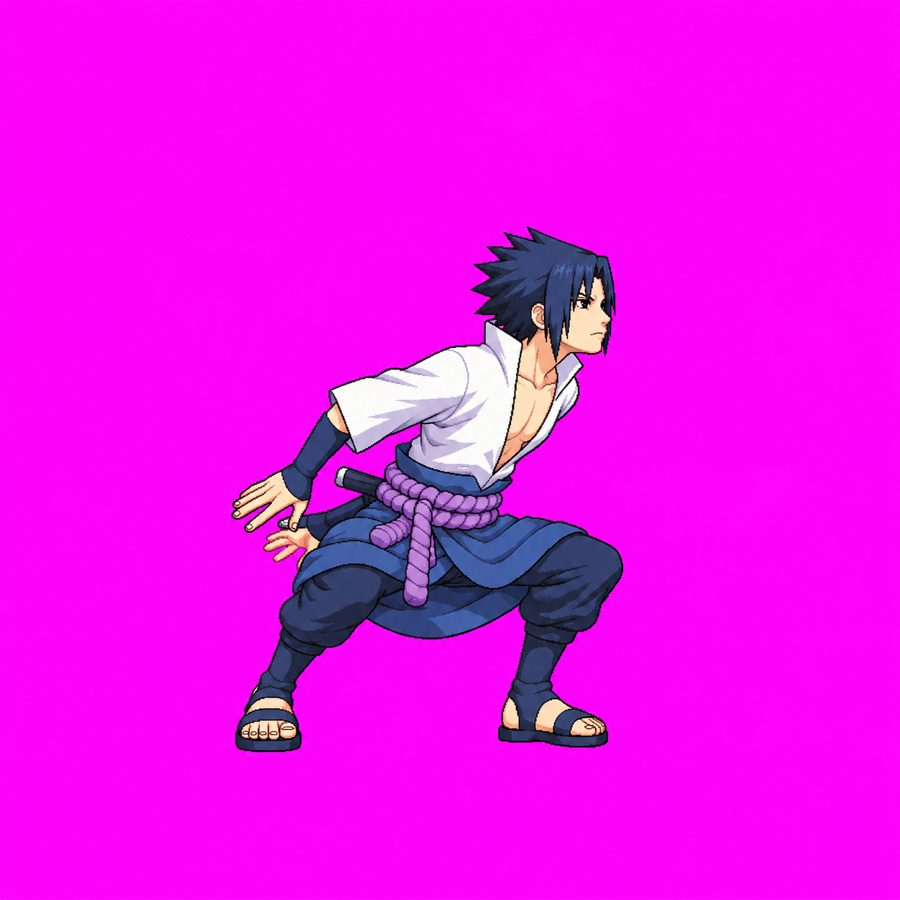
A2 — stagger v09 (approved as drawn)
Four 150 ms looping frames. Phase order stays right-lean, center, left-lean, center. The user approved v09 as drawn via Claude relay audit1 #3. Head ratios are 0.988, 0.974, 1.010 and 0.994; body B values are 1.001, 0.993, 0.964 and 1.010.
Previously approved v08
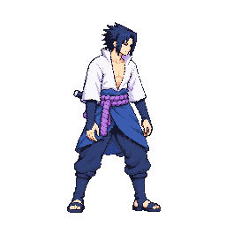
v08 · f0
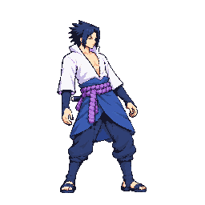
v08 · f1
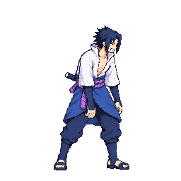
v08 · f2
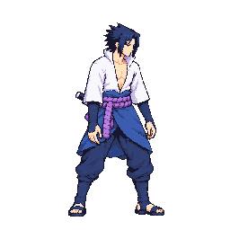
v08 · f3
User-approved v09 · exact current atlas
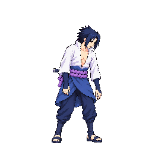
v09 · f0
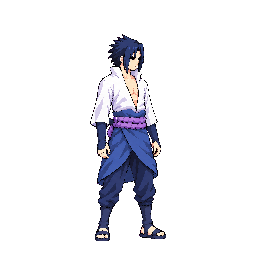
v09 · f1
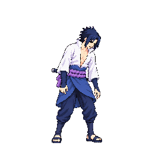
v09 · f2
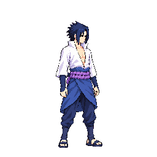
v09 · f3
The exact pack reports median H 0.991 and median B 0.997. Every frame remains within head tolerance. Astra passed all four poses and the f3→f0 return at moderate-to-high confidence; hidden hip/knee positions remain uncertain by about ±3 px.
View the full generated source
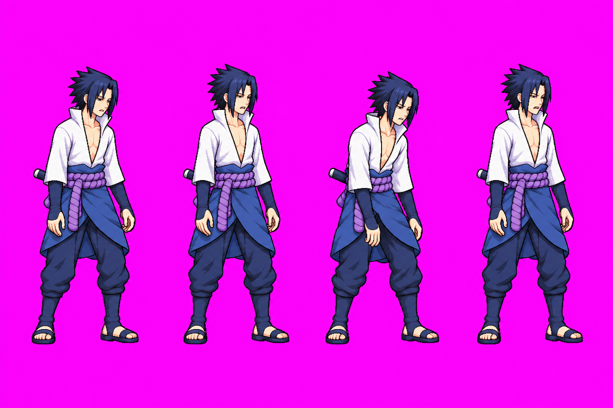
Approved references and move context
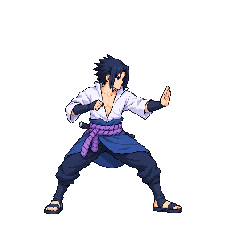
Approved title-style combat
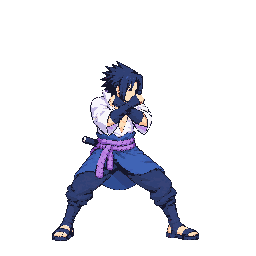
Guard f0
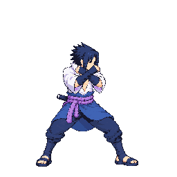
Guard f1
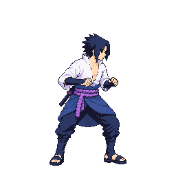
Vanish f0
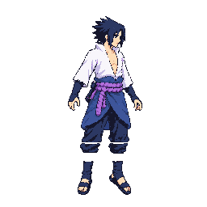
Vanish f1
Image-call counts: jumpSquat v08 1/3; jumpSquat v09 cleanup used no image call; stagger v09 1/3. The current-model waiver came from user decision relay audit1 #2 and applies to these three art chats this round only. Approval came via audit1 #3. See the generation inventory, technical scale record, Astra audit findings and atlas hashes.